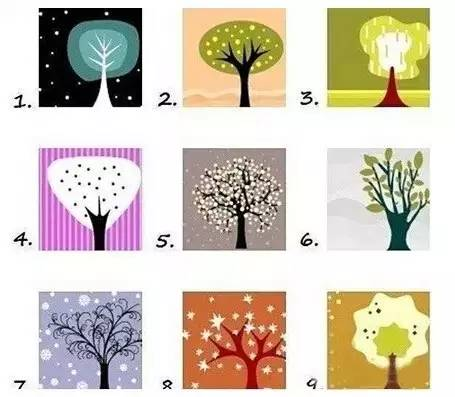
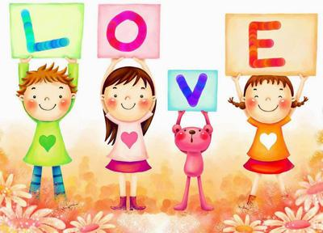

互惠动态
|
|
九棵树，你会躲在哪棵树后？
试想，你正在跟一群小伙伴玩捉迷藏，现在图中有九棵树，凭直觉你会躲在哪棵树后呢？

选好
了
没有
1、这是一棵慷慨、道德感很强的树
你是个慷慨、道德感很强的人。你希望自己做到最好。你很有上进心，对自己要求也很高。在别人眼里，你可能有点难相处。但是对你来说，你与自己才最难相处呢。你不愿意让自己放松，总与自己较劲儿。你工作非常努力，但是你不是一个自私的人。
2、这是一棵有趣、诚实的树
你是个有趣、诚实的人。你的责任心非常强，喜欢照顾别人。你不喜欢谎言，因此你待人真诚，也不喜欢尔虞我诈的工作环境，你更喜欢彰显责任心的工作。你亲人的个性容易得到别人的信任。你非常聪明，可以说是睿智，而且思维活跃，可以把故事讲述得绘声绘色。
3、这是一棵聪明有想法的树
你是个聪明有想法的人。你是个思想家，对你来说你的想法和意见是你最重要的东西。你是不是喜欢关起门一个人研读那些理论学家的理论和观点？你很内向，你喜欢和那些与你有同样爱好的人相处。你绝不会让自己变成一个肤浅的人。你经常陷入有关道德标准、品性、社会等问题中不能自拔。你的做事的风格性很强，只愿做自己认为是对的事，即使社会大多数人认为这是非常不明智的行为。
4、这是一棵会思考哲学问题的树
你是一个哲学家。你拥有非常独特的精神世界，一般人很难看懂你。你颇有直觉力，而且性格稍微有点儿古怪。你一说起话来，经常被误解，然后你就内伤了。
你是一个需要个人空间的人，在这样的空间里，好好构建你的思想殿堂。你很容易看清生活其实是光明与黑暗并举，不过，你挺感情用事的，而且，创造力有待提高。
5、这是一棵自强不息的树
你是一个自食其力的人，非常独立。你的生活哲学就是：“我走我的路。”你知道“保持自我”和“与人相处”的艺术。你非常清楚自己想要什么，而且对于追求梦想这种事，你从不畏惧。你对别人只有一个要求，那就是：诚实。你内心非常强大，能承受“赤裸裸”的真相。
6、这是一棵感情丰富，与树为乐的树
你感性而友好，很容易交朋友。你有很多朋友，而且你为了朋友可以两肋插刀。你总给人一种阳光温暖的感觉，与你相处，人们都觉得很放松。你关注个人成长，所以不会让自己停滞不前。你还是个情种，希望给予爱也希望被爱。而当你遇见你喜欢的人的时候，你的爱是全付出的，即使对方一点回应都没有。
7、这是一棵淡定并快乐着的树
你是个快乐又淡定的人。你很感性所以很能理解人。你是个天生的倾听者，懂得倾听的艺术，何时只是默默听着，何时可以适当回应，你都很清楚。你相信每个人都有每个人的故事，都有每个人需要完成的成长历程。
8、这是一棵充满活力，且魅力四射的树
你是一个充满活力和魅力的人。优雅而热情的你，是个谐星，知道怎么把大伙儿逗乐。你敢于冒险，从不害怕。你果敢的行为经常震惊了周围的小伙伴，让大家羡慕不已。不过，你并不是想显摆自己，这就是你而已。你不喜欢做作，只对引起你兴趣的事物感兴趣。而一旦开始感兴趣，不把它研究个底朝天，你是不会善罢甘休的。我猜，周围有很多人都很想像你一样过活的，是吗？
9、这是一棵乐观又幸运的树
你是个乐观又幸运的人。你相信生活本身就是老天给予的一大财富，所以，你会竭尽所能、最大可能地开采这一财富。你懂得什么是真正的“接纳自己”，所以你从内而外散发出一种坚不可摧的气场！


关于互惠，您了解得够多么？
请外国学生来家庭照顾孩子，辅导孩子外语？
只了解这些是不够的！
获取更多信息请参考以下方式：
联系ASC：
电话：86-21-61116069(上海中心）
86-25-66065662（南京中心）
全国家庭均可申请！
手机：15601666586（可加微信）
Q Q：3259637585
微信：asc-center
邮箱：info@asc-center.com
网站：www.asc-aupair.com

感谢您对我们的关注